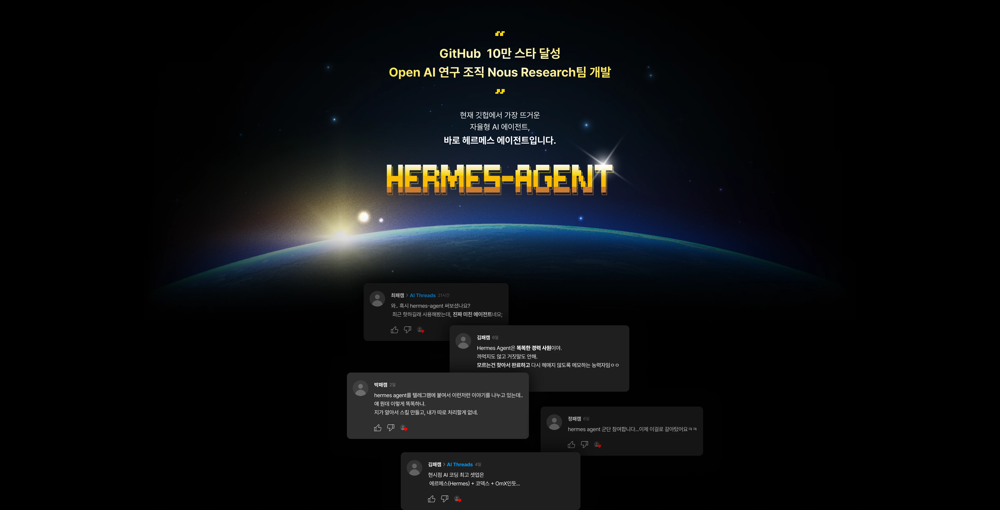
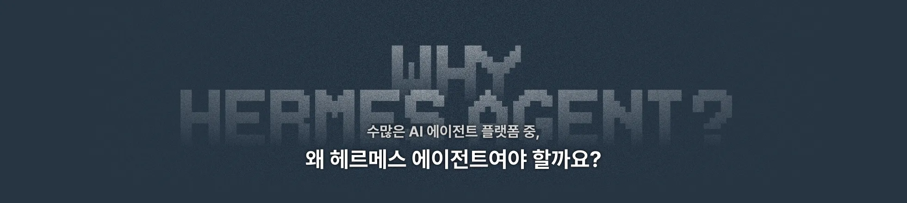
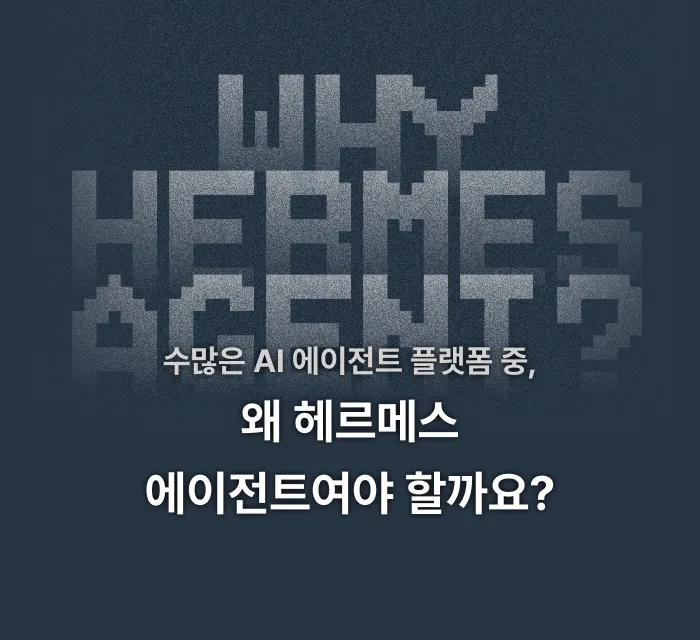
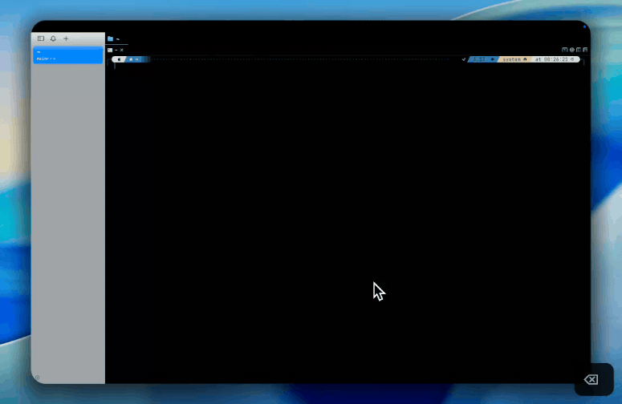
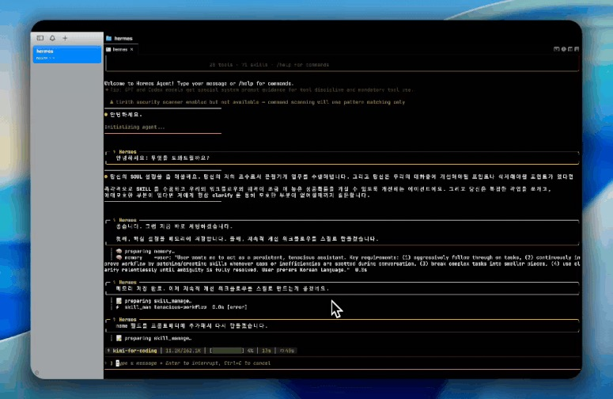
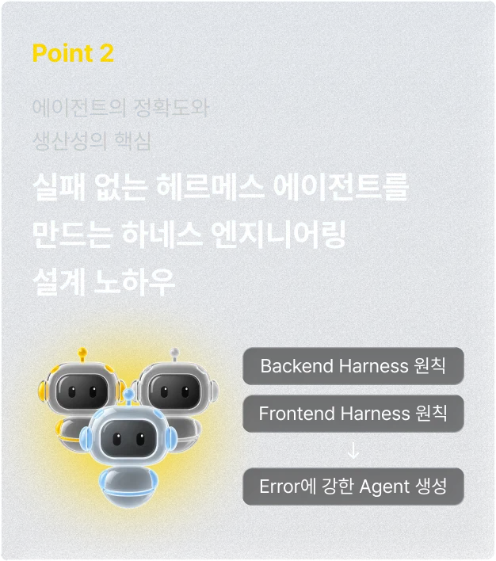

01 Hermes Agent 설치
개인 노트북에 Hermes를 설치하고, 기본 사용법과 오류 해결까지 같이 확인합니다.

소수정예 실습 모임 · 8월 22일(토)
개발 에이전트 팀을 만드는 강의가 아닙니다. 개인 노트북에 Hermes를 설치하고 텔레그램으로 실행한 뒤, LLM Wiki까지 연결하는 소수정예 실습입니다.
이 수업이 다른 점
개발자 강의: 설치 후 개발팀 아키텍처, 역할 분리, 자동화 파이프라인
이 수업: 설치 → 첫 대화 → 내 폴더에 기록 → 혼자 다시 켜보기


오늘 결과물
개인 노트북에 Hermes를 설치하고, 기본 사용법과 오류 해결까지 같이 확인합니다.
텔레그램을 연결해 직접 대화하고 실행합니다. 채팅창에서 바로 시켜 보는 상태까지 갑니다.
내 자료를 저장하고 정리할 Wiki를 만듭니다. 나중에 다시 꺼내 쓸 지식 자리를 오늘 잡습니다.
설치에서 끝내지 않습니다. Hermes가 Wiki를 활용하도록 연결하고 한 번 사용해 봅니다.
3시간 구성
개인 노트북에 Hermes를 설치하고, 텔레그램을 연결해 직접 대화하고 실행합니다. 기본 사용법과 오류 해결까지 2시간 동안 맞춥니다.

개인 LLM Wiki를 구성하고, 자료를 저장하고 정리하는 방법을 실습합니다. Hermes와 Wiki를 연결해 바로 활용해 봅니다.

ChatGPT Plus, 텔레그램 PC, 크롬, Codex, Obsidian이 준비되지 않은 분은 미리 말해 주세요. 수업 전에 따로 설치를 도와드립니다.

모임 안내
| 일정 | 2026년 8월 22일(토) 10:00~13:00 |
|---|---|
| 시간 | 총 3시간 · Hermes 2시간 + LLM Wiki 1시간 |
| 장소 | LSE스터디카페 |
| 인원 | 최대 3명 |
| 참가비 | 20,000원 / 3시간 · 장소 대여비 포함, 음료는 각자 지참 |
| 주차 | 필요한 분은 미리 말씀해 주세요. 인근 주차장 안내를 도와드립니다. |
준비물
직접 설치하고 실행할 개인 기기가 필요합니다.
수업에서 Codex 연결까지 확인합니다. Plus 이상 구독이 필요합니다.
텔레그램 가입과 PC 버전, 구글 계정, 크롬 브라우저를 준비해 주세요.
사전 설치가 어려우면 미리 말해 주세요. 별도로 설치를 도와드립니다. 음료는 각자 지참입니다.
